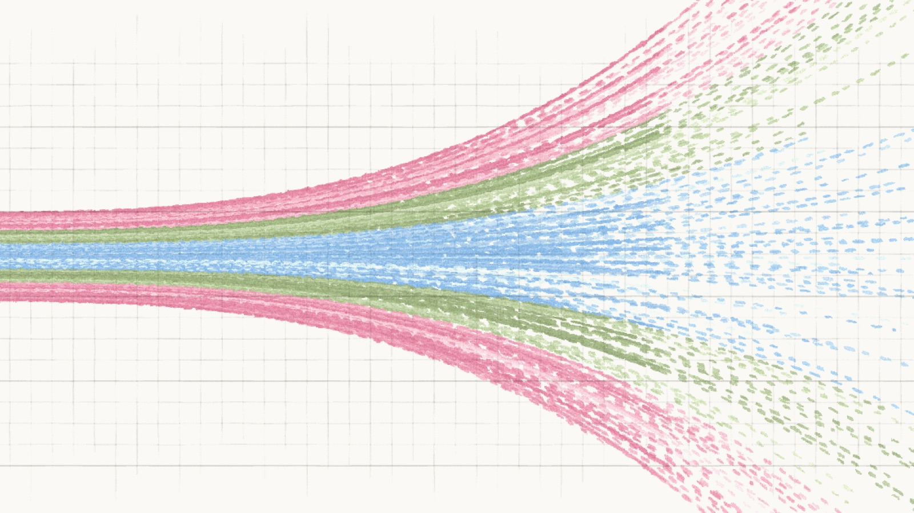

Good morning. Anthropic's economics team has been quietly doing something unusual for an AI lab: publishing careful, peer-reviewed economic science about the world its own technology may reshape. On Wednesday it released its most ambitious salvo yet — a model of the U.S. economy to 2030, an interactive scenario explorer that lets anyone dial in assumptions about AI and watch the economy they imply, and a working paper laying out three futures: modest, substantial and extreme. The website is genuinely beautiful — animated Sankey diagrams of workers moving between jobs, unit-dot grids of trillion-dollar GDP, a swarm chart of 10,000 Americans' beliefs. But underneath the craft is a serious, quantified claim: in the median view it computes, AI would make the U.S. economy about 10% larger by 2030 than it would otherwise be, reallocate nearly 2.5% of the workforce, and nudge unemployment to around 5%. And the paper is explicit about what would have to be true for those numbers — and about what happens when the assumptions get more aggressive.
This is the deepest thing an AI company has yet published about the labor market its own products are entering — and unusually, it is built on an open, adjustable model with named academic reviewers, a transparent working-paper status, and a stated willingness to be wrong. It is also, in its "extreme" case, a genuinely scary document: a route — requiring recursively self-improving AI — in which unemployment spikes to historic levels, knowledge-worker wages fall by more than 10%, total labor income barely changes, and capital's share of a much larger pie climbs to nearly 55%. Both futures are on the table. Anthropic's own point is that which one we get is not predetermined. That is the argument worth understanding.
What: Anthropic's Economics team published "Economic Scenarios for Transformative AI" — a working paper, a U.S.-to-2030 economic model, and an interactive scenario explorer (Santi Ruiz et al., The Anthropic Institute, Sep 9, 2026), with co-authors Anton Korinek, Charles I. Jones, Szymon Sacher, Tess Cotter and Peter McCrory, reviewed by 18 named academic economists ranging from Daron Acemoglu to David Romer. It models how AI affects growth, jobs, wages, unemployment, and the labor/capital split under three scenarios.
When: Survey of U.S. adults fielded August 2026 (n = 10,980; plus 19,644 self-selected site visitors); published September 9, 2026. The median respondent's answers imply a "substantial change" future: GDP about 10% higher by 2030, unemployment around 5%.
Why it matters: The most rigorous, open, quantified public attempt yet from an AI lab to model the labor market its own technology is entering — and a deliberately honest one: its "extreme" scenario, requiring recursively self-improving AI adopted quickly for knowledge work, is a stark picture of historic unemployment and a shrinking labor share. The leaders' whole point is that which future arrives is not predetermined — and can be influenced now.
What Anthropic actually published
The release, on September 9, is really three artifacts in one. First, a working paper, "Economic Scenarios for Transformative AI," by Anton Korinek, Charles I. Jones, Szymon Sacher, Tess Cotter and Peter McCrory — published on The Anthropic Institute and explicitly labeled a work in progress, "not predictions." Second, a model of the U.S. economy to 2030, linking AI's capabilities and adoption to growth, job reallocation, unemployment, wages and factor shares. Third, the Econ Scenario Explorer, an interactive page that lets anyone set their own assumptions and see the economy those assumptions imply. The navigation text is important in context: Anthropic says it studies how AI reshapes the economy "because we're committed to ensuring that this transition is beneficial for society, including workers." Whatever one thinks of the company's motives, this is the most candid large-lab treatment yet of the labor-market question — and it carries eighteen named external reviewers, from Daron Acemoglu and David Autor to Emi Nakamura and Jón Steinsson.
The model works off five inputs, each adjustable on the page: capabilities (what tasks can AI do, 0–100%), adoption (how much do people use it, 0–100%), autonomy (how much AI does on its own — from almost none to almost all), productivity (how much more productive AI makes people — from 1× to 10×+), and adjustment (how long it takes displaced people to find new jobs — from 1–2 months to 3+ years or never). Each setting flows through to a 2030 economy. The delightful, slightly terrifying part is that the page means to be used: the preset buttons — modest, substantial, extreme — come with a recommendation that you try your own.
The three futures
The core of the paper is the trio of scenarios, each defined by what it assumes about AI rather than by what it predicts. The modest case assumes AI has something like the impact of the internet: real gains, but within the historical norm, arriving gradually. The substantial case assumes AI is capable of doing half of all knowledge work by 2030, mostly autonomously, but that most of that capacity goes unused because adoption is incomplete. The extreme case assumes AI is more productive than humans at the vast majority of knowledge-work tasks, does nearly all of them autonomously, and creates essentially no new knowledge-work tasks for people — which, the paper argues, would likely require recursively self-improving AI, adopted quickly.
Those assumptions, not any single headline number, are what change the answer by tens of trillions of dollars. In the modest scenario, GDP reaches about $34.1 trillion by 2030 (at 2025 price levels), about +1.6% over baseline. In the substantial scenario it reaches about $36.3 trillion, +8.3% — an economy growing at roughly twice its normal rate. In the extreme scenario it reaches about $44.4 trillion, +32.4%, on growth of 15% a year — an economy that doubles in size every four and a half years. Today's U.S. economy produces over $30 trillion a year, and of every dollar about sixty cents goes to labor and forty to capital. Those shares move sharply across the scenarios, and that — not the growth — is where the humane stakes live.
"In this scenario, the main challenge is not achieving economic growth, but making sure the benefits are broadly shared and the costs aren't unequally dispersed."
— Anthropic Institute, on the extreme scenario's core distributional challengeThe paper also finds, under certain assumptions, that wage inequality between knowledge workers and other workers would increase substantially in the extreme scenario — a natural consequence of AI being a complement in physical work and a substitute in cognitive work. To keep knowledge-worker compensation whole in that case would require transfers on the order of 9% of GDP, comparable to the entire Social Security and Medicare budgets combined. That is not a policy prescription; it is a mathematical statement about the scale of the distributional problem if the extreme path arrives.
The labor market: who wins, who loses
Anthropic calls the share of GDP going to workers vs. capital owners "the most important thing we compute", and the scenarios are arranged to show why. Today, roughly sixty cents of each dollar produced goes to workers. In the modest case, that fraction barely changes: 59.4% to labor, 40.6% to capital. In the substantial case, it shifts: 56.1% to labor, 43.9% to capital. In the extreme, it flips the historic pattern decisively: 45.2% to labor, 54.8% to capital — a three-point increase in capital's share in four years, which is fast enough to feel like a political earthquake.
The Sankey diagram — the animated flow chart on the page — shows where the people go. Between 2026 and 2030, in the substantial case, 62.2% of workers start in knowledge work and 37.8% in other occupations. By 2030, the knowledge-work share is 59.7%. In transit: 2.5% displaced, 1.8% crossed over, 0.7% still waiting to move. The modest scenario barely moves the needles. The extreme scenario shows knowledge workers falling from 62.2% to 48.7% of employment by 2030 — more than thirteen percentage points of the workforce reclassified, displaced, or replaced.
Wages tell the same story in a different register. In the modest case, wages behave roughly as they would without AI. In the substantial case, wages for knowledge workers are essentially flat while other workers see modest gains — non-cognitive workers end the period up 5.9% vs. a no-AI baseline, while cognitive workers are at 0.3% below. In the extreme case, cognitive wages fall by more than 10% by 2030 — and total labor income, spread across the entire workforce, is barely changed from a no-AI world. The economy has grown massively; the people who make it work have not been asked to benefit proportionally.
What 10,000 Americans said — and what they believe
The most unusual part of the release is the public data: 10,980 U.S. adults, surveyed in August 2026, plus 19,644 self-selected site visitors who also played with the scenario explorer. The answers about capabilities are wide — that is where the public split most — but the outputs cluster. The typical respondent's answers imply a substantial-change future: GDP roughly 10% higher by 2030 than it would be without AI, with overall unemployment nudged up to around 5%. About one in ten of respondents landed on numbers implying the extreme scenario.
The page visualizes these as a belief swarm — bee-swarm plots showing how people answered each of the five questions, split between the general public and the site's own self-selected visitors. The widest disagreement was on capabilities: how much knowledge work is actually within reach of AI. Agreement was tighter on autonomy — most people expected AI to do at least some of what it can by itself. The public believes a future closer to the substantial scenario is likely, not the modest one. That is the politically important fact, because it means the baseline expectation is no longer that AI is a generic productivity tool with diffuse effects. The public thinks the disruption will be visible in the numbers.
The real question is the labor share
The paper's quiet, defining contribution is to stare at factor shares — how much of GDP goes to workers vs. capital owners — and say so in public. Anthropic calls this "the most important thing we compute." The model's baseline: roughly 60% of GDP to labor, 40% to capital. The scenario slopes are the story — modest holds the split almost flat, substantial slides it to 56/44, extreme pushes it to 45/55, the lowest labor share in modern history — because AI simultaneously raises returns to capital and reduces labor demand in the occupations it touches most. "In this scenario, the main challenge is not achieving economic growth," the authors write, "but making sure the benefits are broadly shared and the costs aren't unequally dispersed."
Intellectually, the intervention is sharpest in its mechanism. The page carries an explicit channel that advanced AI raises the returns to capital — a suggestion several reviewers pressed them on ("advances in AI may raise the returns to capital, so that more of the gains flow to the owners of capital" is quoted verbatim in the paper) — and that channel is what turns the substantial scenario from a pure prosperity story into a winner-take-most one. It is exactly the kind of assumption most AI labs leave out of their public economics, because it says something uncomfortable about who the winners will be.
What the model deliberately leaves out — and the innovation floor
This is where Anthropic deserves credit for being more honest than it has to be. The paper says explicitly: "Like every model, it is a stark simplification of a complex reality." It does not include policy responses. It does not include business cycles. It does not model aggregate demand effects, financial market disruptions, or — critically — catastrophic risks. It does not model robots. "We did not include scenarios where humanity develops hyper-capable robots," the authors write, and the explanatory text makes clear that this matters: real economies have a physical layer, and a world in which physical labor is also displaced is a different economy from the one modeled here. The scenario explorer is, in other words, a floor on disruption in the extreme case, not a ceiling.
The other deliberate omission runs the other way. If AI raises the stock of ideas fast enough, it could increase labor demand as fast as it destroys tasks — a world where AI is more complement than substitute. The model's innovation channel captures this, and by 2030 the stock of ideas is higher by about 0.61% relative to a no-AI baseline. That sounds small — and it is meant to be. "If the model had been set to capture the full power of AI to generate scientific and technological breakthroughs, the implied GDP gains would have been even larger," the authors write. The channel is a self-declared lower bound, published on purpose: a major AI lab deliberately under-estimating its own technology's upside, with a written explanation of why. The real question — does AI create new jobs and tasks faster than it destroys old ones? — is left open. The paper's answer is: not in the baseline.
How to read the Anthropic Institute framing
This is worth pausing on, because it does not happen often enough: a major AI lab published a piece of economic science, explicitly stated its limitations, and let the numbers say what they say. The release was reviewed by eighteen named external economists, from Acemoglu to Romer. It described its own innovation channel as deliberately weak. It did not over-claim its own upside. It noted that its extreme scenario — the only one showing a really good outcome for the economy as a whole — requires something close to recursive self-improving AI, adopted fast. It was, in other words, what would happen if Anthropic treated its own product as an economic subject rather than a commercial one. The page's authors credit Jack Clark for direction throughout; the project's origins are traced to Miriam Chaum, Saffron Huang and Maxim Massenkoff; the interactive explorer was built by Kelsey Nanan, Kyle Turman and Szymon Sacher. The writing is by Santi Ruiz, a professional economic journalist, not by a PR department.
The strongest signal is not in the numbers but in what is absent: the Anthropic Institute has a separate Economic Futures research portfolio and publishes an Economic Index measuring real-time AI use today. The scenario model and the usage index are meant to be read together: one measures what AI does now, the other projects what it might do. The gap between the two — what it does today vs. what it could do if capabilities and adoption surge — is the space in which most policy, most business strategy, and most careers are now being decided. Anthropic's entire point is to make that gap visible and quantified.
What to watch next
- The labor share trajectory. The paper identifies this as the single most important thing it computes. Watch for early signals in BLS data on labor's share of income through 2027 — if it starts falling even modestly, it validates the channel Anthropic is highlighting before the "substantial" scenario even needs to arrive.
- Knowledge-work wages. The model predicts cognitive wages basically flat to declining even in the "substantial" case. Wage data for white-collar, computer-and-math occupations — especially real-time salary data from Indeed, Levels.fyi and Glassdoor — is the most direct test. If knowledge-worker real wages start flatlining while GDP grows, the model's main distributional claim is landing.
- The survey-forecast gap. The public median lands near "substantial." If a follow-up survey shifts toward the modest end — or toward the extreme — that will tell you something about the public's lived experience with AI, not just their abstract beliefs about it.
- What Anthropic models next. The paper explicitly says it does not model robots, business cycles, financial disruptions, catastrophic risk, or policy responses. Each of those is a massive addition. If Anthropic publishes a version that includes physical automation, the numbers change dramatically — likely for the worse.
- The "halving the capital" stress test. In the paper's own sensitivity analysis (Table 5), cutting the capital supply in half collapses even the substantial scenario's GDP gains and drives sharp average-wage declines — a reminder that the model's numbers lean on a specific, contestable assumption about how much capital the economy will supply. Watch whether that finding reshapes AI-economics discourse among policymakers.
- Policy proposals. Anthropic has already published a policy-proposals PDF alongside this release. That document — and whether anyone in Washington reads it — is the bridge between the model and the world the model is trying to describe.
The TIMPS verdict
The model is credible and deliberately conservative. A working paper with eighteen named economists reviewing it, an explicitly stated innovation-channel floor, and no robots in the model — this is a piece of science, not a marketing exercise. It is rare for an AI lab to publish numbers that make its own product look distributionally dangerous.
The distributional story is the headline. GDP growth between +1.6% and +32.4% is big, but labor share falling from 60% to 45% is the number that should concern policymakers. That is a world in which a much larger economy produces the same total income for workers, while capital owners capture the growth. The substantial scenario already delivers this; the extreme case is a world in which nearly a fifth of knowledge workers are unemployed.
The public already believes the substantial scenario. That is the study's quiet political punch: it is not Anthropic saying the disruption will be big. It is 10,000 Americans, surveyed independently, landing on a future in which AI is a visible, macroeconomic-scale event. The median is not "AI is a productivity tool." It is "AI is a new economy, and I am not sure who benefits."
The most important number is 0.61%. That is how much the innovation channel raises the stock of ideas. It is the paper's explicit, conservative admission that AI has not yet been shown to create more than it destroys — and that the optimistic case is real but depends on facts not yet in evidence. That is the honest, uncomfortable core of the whole exercise.
Facts in this piece were compiled from Anthropic's "What will our economic future look like?" and its companion working paper "Economic Scenarios for Transformative AI" (The Anthropic Institute, September 9, 2026), with co-authors Anton Korinek, Charles I. Jones, Szymon Sacher, Tess Cotter and Peter McCrory, and commentary from Marginal Revolution (Tyler Cowen), Business Today, OfficeChai and Winzheng within the September 9–10, 2026 window. The model is a working paper, explicitly not a prediction; the scenarios carry no probabilities. All scenario outcomes are computed at 2025 price levels. This is news analysis by an independent publication — not investment advice, not an endorsement of Anthropic or any other company, and not economic or financial advice.
Sources
- Anthropic Institute — "What will our economic future look like?" (Econ Scenario Explorer, Sep 2026)
- Korinek, Jones, Sacher, Cotter, McCrory — Economic Scenarios for Transformative AI (Working Paper No. 2026-02, The Anthropic Institute, Sep 2026)
- Anthropic — Economic Futures research portfolio
- Anthropic — Economic Index (real-time AI use)
- Anthropic Institute — Recursive self-improvement (explainer referenced by the extreme scenario)
- Marginal Revolution (Tyler Cowen) — Economic Scenarios for Transformative AI
- Business Today — Rapid AI growth threatens unemployment spikes beyond historic recession levels: Anthropic study
- OfficeChai — AI could cause GDP growth of 15%, but wages fall by 11.5% and unemployment up to 17.9% in 'extreme' scenario
- Winzheng — Anthropic's Econ Scenario Explorer: extreme case projects 15% annual GDP growth with labor share falling to 45.2%
One story a day,
explained properly.
New TIMPS deep dives land regularly — paired with the five-signal PostCard every morning. Free forever.